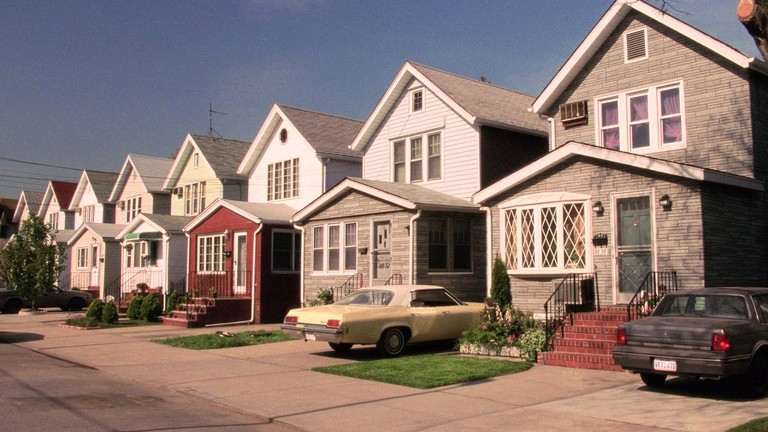

Grand Moon Diner
From your waitress
If I am not pouring your coffee, I am at an audition. Order the rickey, I squeeze the limes myself.
M.J.

Forest Hills, Queens. Half our breakfast crowd comes in from out here.
Sandwiches
Holiday sliders7.95
Warm turkey, cranberry sauce and crisp baked stuffing on toasted mini buns.
Grilled cheese5.95
American on buttered white, griddled golden, with a cup of tomato soup.
Burger deluxe7.50
Half pound, American cheese, lettuce, tomato, fries, slaw and a pickle.
Blue Plate
Thanksgiving dinner12.95
Brined roast turkey breast, stuffing, pan gravy, roast potatoes and pumpkin.
Fountain
Bugle cherry rickey2.75
Fresh lime, sweet red syrup and soda water over ice, a maraschino on top.
Egg cream2.25
Chocolate syrup, cold milk and seltzer, stirred hard until it foams.
Coffee1.00
Fresh pot every twenty minutes. Refills free.
Pie Case
Rice pudding3.25
Baked with cinnamon and raisins, warm or cold.
Grand Moon Diner, Sixth Ave. at Grand St., New York
(212) 555-0503. Since 1962. Menu No. 15.Prices subject to change.
No substitutions on the Bone Saw.
(212) 555-0503. Since 1962. Menu No. 15.Prices subject to change.
No substitutions on the Bone Saw.